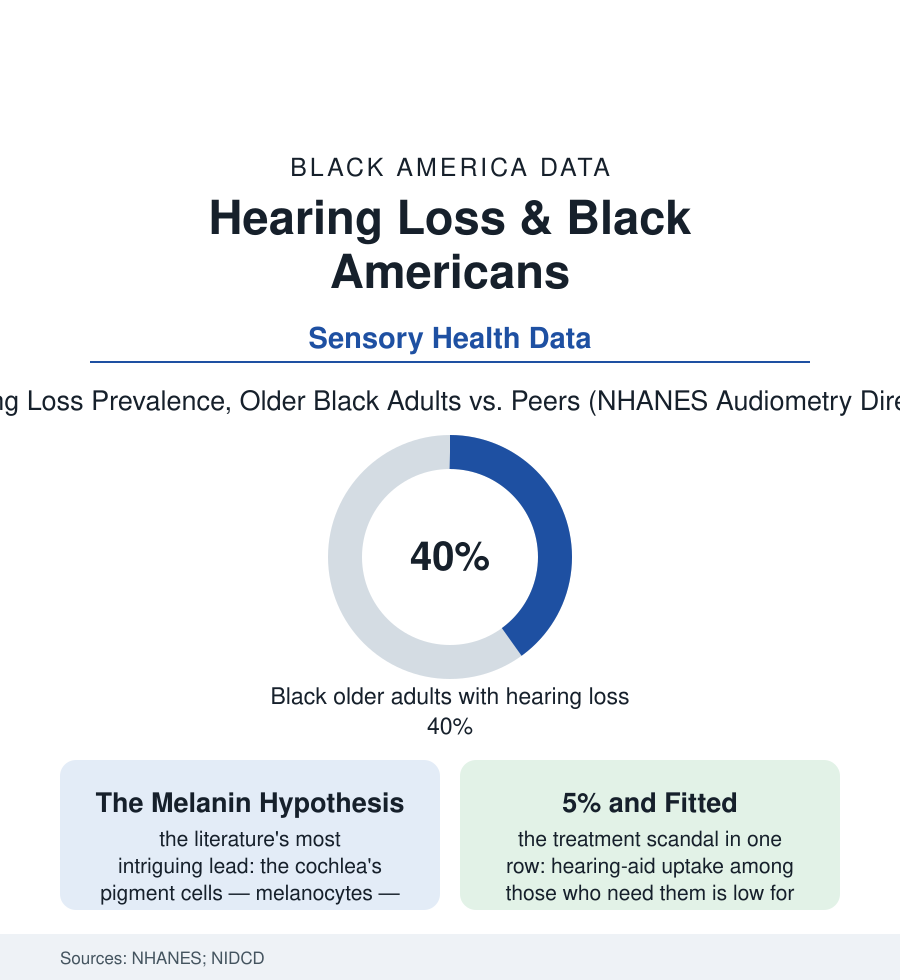

Black Public Health
The Quiet Protection: Hearing, Noise, and the Untreated Ear
Black Americans show strikingly lower hearing loss in the national exams — until the factory's noise is accounted. And almost nobody, in any row, gets hearing aids. The hearing file.

The sense files of this section usually run one direction; the hearing file reverses it. In the national audiometry exams — the booth, the tones, the beep answered or missed — older Black adults show substantially less hearing loss than their white peers, a protection the literature has chased for decades. And almost no one, in any row of the table, is wearing hearing aids. This article reads the hearing file.
The Protection and the Noise
The NHANES audiometry series state the finding plainly: across the older age bands, measured hearing loss runs markedly lower in Black participants — differences on the order of a third to a half less prevalent in several published cuts, persisting after the standard adjustments. The leading biological account is the file's most elegant hypothesis: the inner ear's stria vascularis — the cochlea's battery — is maintained by melanocytes, the same pigment cells as the skin's, and the pigmentation gradient tracks the protection in the data with unsettling neatness (the fair-skinned and blue-eyed rows of the occupational studies carrying the worst noise damage at equal exposures, the melanin hypothesis surviving its tests better than most). Against the protection stands the exposure ledger, and it is written in this atlas's ink: the factory and farm files' noise (the unprotected decades of the industrial workforce's hearing — the OSHA standard arriving in the 1980s over shop floors that had already taken the high frequencies from a generation of Black machinists and foundrymen, the audiograms of the retiree studies showing the notch at 4,000 hertz like a signature), the military file's blasts and engines, the firing range and the hunting field, the personal-audio era arriving with its own decibels for every group equally. Net of both accounts, the protection wins the population average — an aging Black America that hears, measurably, better than the nation expects, its elders' conversational authority in the family data resting partly on the unglamorous fact that grandmother can still hear the room.
The Untreated Sense
The childhood rows carry one more entry the school file needs: the ear infections and the screening failures of the pediatric data — the newborn hearing screens universal on paper, the follow-up appointments where the diagnosed infants of this file are lost to the system at the highest rates in the early-intervention audits — a gap measured in the months when language is built, echoing into the reading file's first tables.
Where loss exists, the treatment rows collapse for everyone and worst here: hearing-aid adoption among adults who need them running in the teens of percent nationally in the survey data and lower still in the Black rows — the reasons a perfect miniature of the system's design (a device priced at several thousand dollars a pair across the study years, classified by Medicare statute as excluded from coverage since 1965, sold through a bundled professional channel whose access map matches the specialist deserts of the workforce file), the over-the-counter hearing-aid category created by the recent federal rule standing as the file's live experiment (the pharmacy-shelf devices at a tenth of the clinic price, their uptake by the population of this file now measurable in the market data — the access question converted, as so often, from a coverage fight into a retail one). The stakes rows are the section's familiar compound: untreated loss tracking, in the longitudinal aging studies, with accelerated cognitive decline and dementia risk (the hearing intervention trial of the recent literature — the largest of its kind — finding the devices slowing cognitive decline in the higher-risk subgroup, its Black participants' outcomes followed in the same data), the depression and isolation files' sensory chapter, the falls of the bone file. The ear, in other words, is a brain-health organ the payment system treats as a cosmetic one — and the population with the best-protected ears in the country still faces, when loss comes, the same uncovered $4,000 door, with the longest walk to reach it.
Reading the Hearing Data
The hearing file is the health section's parable of protection and access in one organ: biology dealt this population a stronger battery; the market and the statute then priced its maintenance out of the same reach as every other file's. NHANES publishes the audiograms. The family reunion — three generations arguing happily at full volume, most of it by choice — publishes the rest.
More in Black Public Health
Hypertension Among Black Adults: Prevalence, Control, and Consequences
About 55 percent of Black adults have hypertension — the highest rate of any U.S. group. Prevalence, onset, control, and the stroke, heart, and kidney consequences in the data.
Diabetes Among Black Adults: Prevalence and Complications
Nearly one in five Black adults has diabetes, diagnosed or undiagnosed — and its complications fall with particular weight. The CDC data on prevalence, control, and outcomes.
Black Life Expectancy: The Gap at Birth and Its Causes
Black life expectancy at birth is about 73 years, roughly five years below the national figure — the summary measure of every health gap in this section. The CDC data.
Source: National Health and Nutrition Examination Survey (NHANES) audiometry; National Institute on Deafness and Other Communication Disorders; JAMA and hearing-research literature; OSHA noise data.